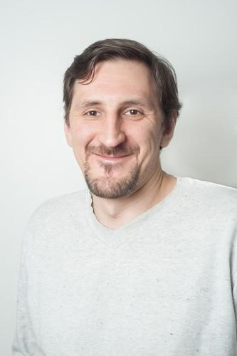

Hello! I'm Sergei Stepurko
About me
I am 38 years old and live in Russia. I have been working in the IT field for over 15 years.
Hobby
I have an unusual hobby - in my spare time I breed lizards.
You can read more about them here
My work
I work as a Senior Support Engineer for an international company and provide support for cloud-based contact center products.
My areas of knowledge
- Hardware
- Assembly, configuration, maintenance of computers and servers; Design, construction, adjustment of computer networks
- Software
- Windows OS; Linux OS
- Network services
- DHCP, DNS, Proxy, Firewall, Samba, LDAP, VPN, Email Server, OSI model
- SIP protocol
- Understanding of the SIP messages and responses (INVITE, REFER, ACK, BYE, 100 Trying, 180 Ringing, 200 OK, etc.)
Education
All this time I was constantly learning something new. For further development I decided to get a foreign education and entered the Boston University.